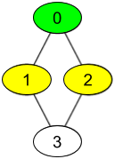

1311. Get Watched Videos by Your Friends
Medium
There are n people, each person has a unique id between 0 and n-1. Given the arrays watchedVideos and friends, where watchedVideos[i] and friends[i] contain the list of watched videos and the list of friends respectively for the person with id = i.
Level 1 of videos are all watched videos by your friends, level 2 of videos are all watched videos by the friends of your friends and so on. In general, the level k of videos are all watched videos by people with the shortest path exactly equal to k with you. Given your id and the level of videos, return the list of videos ordered by their frequencies (increasing). For videos with the same frequency order them alphabetically from least to greatest.
Example 1:

Input: watchedVideos = [["A","B"],["C"],["B","C"],["D"]], friends = [[1,2],[0,3],[0,3],[1,2]], id = 0, level = 1 Output: ["B","C"] Explanation: You have id = 0 (green color in the figure) and your friends are (yellow color in the figure): Person with id = 1 -> watchedVideos = ["C"] Person with id = 2 -> watchedVideos = ["B","C"] The frequencies of watchedVideos by your friends are: B -> 1 C -> 2
Example 2:

Input: watchedVideos = [["A","B"],["C"],["B","C"],["D"]], friends = [[1,2],[0,3],[0,3],[1,2]], id = 0, level = 2 Output: ["D"] Explanation: You have id = 0 (green color in the figure) and the only friend of your friends is the person with id = 3 (yellow color in the figure).
Constraints:
n == watchedVideos.length == friends.length2 <= n <= 1001 <= watchedVideos[i].length <= 1001 <= watchedVideos[i][j].length <= 80 <= friends[i].length < n0 <= friends[i][j] < n0 <= id < n1 <= level < n- if
friends[i]containsj, thenfriends[j]containsi